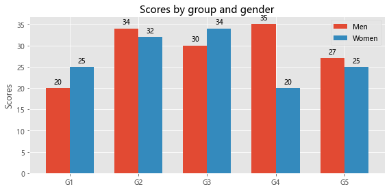

柱状图¶
绘图主要用到的是matplotlib库（版本为3.4.1）、seaborn库（版本为0.11.1）；matplotlib库（版本为3.4.1）增加些新功能，例如：bar_label()可以实现对柱状图、条形图自动添加标签等；要升级到此版本，请使用pip install - -upgrade matplotlib进行升级，更多功能请查阅官方文档；seaborn功能及操作，详见官方文档。
import pandas as pd
import matplotlib.pyplot as plt
import matplotlib as mpl
import seaborn as sns
import numpy as np
import warnings
warnings.filterwarnings('ignore')# 忽略错误输出
%matplotlib inline # jupyter note显示图片
数据简介¶
读取数据
数据是关于金砖国家的GDP和人均GDP，数据源于世界银行。
data = pd.read_excel('BRICS.xlsx')
data.head()
| Series Name | Country Name | Country Code | 1990 | 2000 | 2011 | 2012 | 2013 | 2014 | 2015 | 2016 | 2017 | 2018 | 2019 | |
|---|---|---|---|---|---|---|---|---|---|---|---|---|---|---|
| 0 | GDP | 巴西 | BRA | 1.189604e+12 | 1.538706e+12 | 2.296662e+12 | 2.340784e+12 | 2.411121e+12 | 2.423272e+12 | 2.337348e+12 | 2.260779e+12 | 2.290686e+12 | 2.320859e+12 | 2.347238e+12 |
| 1 | 人均 GDP | 巴西 | BRA | 7.983747e+03 | 8.803153e+03 | 1.162781e+04 | 1.174578e+04 | 1.199348e+04 | 1.195121e+04 | 1.143115e+04 | 1.096597e+04 | 1.102172e+04 | 1.107971e+04 | 1.112174e+04 |
| 2 | GDP | 俄罗斯联邦 | RUS | 1.416187e+12 | 9.515709e+11 | 1.590489e+12 | 1.654492e+12 | 1.683535e+12 | 1.695931e+12 | 1.662475e+12 | 1.665695e+12 | 1.696107e+12 | 1.739126e+12 | 1.762463e+12 |
| 3 | 人均 GDP | 俄罗斯联邦 | RUS | 9.570808e+03 | 6.491072e+03 | 1.112534e+04 | 1.155358e+04 | 1.173138e+04 | 1.160876e+04 | 1.135524e+04 | 1.135640e+04 | 1.155053e+04 | 1.184444e+04 | 1.201153e+04 |
| 4 | GDP | 印度 | IND | 5.075650e+11 | 8.733574e+11 | 1.763440e+12 | 1.859660e+12 | 1.978420e+12 | 2.125025e+12 | 2.294947e+12 | 2.484425e+12 | 2.659424e+12 | 2.822169e+12 | 2.940157e+12 |
- 为方便显示，对输出结果进行了调整。
数据整理
将年份、数值分别整理成一列，用到的是melt()方法。
data_1 = data.melt(id_vars=['Series Name','Country Name'],value_vars=[1990,2000,2011,2012,2013,2014,2015,2016,2017,2018,2019],
var_name='year',value_name='constant 2010 US$')
data_1.head()
| Series Name | Country Name | year | constant 2010 US$ | |
|---|---|---|---|---|
| 0 | GDP | 巴西 | 1990 | 1.189604e+12 |
| 1 | 人均 GDP | 巴西 | 1990 | 7.983747e+03 |
| 2 | GDP | 俄罗斯联邦 | 1990 | 1.416187e+12 |
| 3 | 人均 GDP | 俄罗斯联邦 | 1990 | 9.570808e+03 |
| 4 | GDP | 印度 | 1990 | 5.075650e+11 |
提取数据
比如要对2019年金砖国家的GDP和人均GDP进行可视化，可进行如下操作：
data_2 = data_1[data_1['year'] == 2019]
gdp = data_2[data_2['Series Name'] == 'GDP']
def trans(x):
return round(x/100000000,2)
gdp['constant 2010 US$'] = gdp['constant 2010 US$'].apply(trans)# 转化成亿美元，便于显示
pergdp = data_2[data_2['Series Name'] == '人均 GDP']
matplotlib方法¶
柱状图¶
金砖国家GDP柱状图
matplotlib.pyplot.bar（x，height，width = 0.8，bottom = None，*，align = 'center'，data = None，** kwargs）
mpl.rcParams['font.sans-serif'] = ['Microsoft YaHei'] # 要显示中文，需要对字体进行设置，这里选择使用微软雅黑字体
mpl.rcParams['figure.autolayout'] = True # automatically adjust subplot
plt.style.use('ggplot') # 设置主题，可通过plt.style.availablel来查看更多主题
fig,ax = plt.subplots(figsize=(8,4))
bar = ax.bar(gdp['Country Name'], # x
gdp['constant 2010 US$'],# height
width=0.8,# 宽度
align='center'# 对齐
)
ax.set_title('2019年金砖国家GDP',fontsize=12,weight='bold')
ax.set_yticks([]) # 不显示纵坐标刻度
ax.bar_label(bar,padding=2,fmt='%.2f 亿美元')
plt.show()
# 保存图片
fig.savefig('bar-GDP.png',
transparent=False, # transparent=True 如果格式支持，则使保存的图形的背景透明
dpi=80, # dpi=80 控制输出的分辨率（每平方英寸的点数）
bbox_inches="tight" #bbox_inches="tight" 使图形的边界适合我们的绘图
)
金砖国家人均GDP柱状图
plt.style.use('ggplot') # 设置主题，可通过plt.style.availablel来查看更多主题
fig,ax = plt.subplots(figsize=(8,4))
bar = ax.bar(pergdp['Country Name'], # x
pergdp['constant 2010 US$'],# height
width=0.8,# 宽度
align='center'# 对齐
)
ax.set_title('2019年金砖国家人均GDP',fontsize=12,weight='bold')
ax.set_yticks([]) # 不显示纵坐标刻度
ax.bar_label(bar,padding=2,fmt='%.2f 美元')
plt.show()
# 保存图片
fig.savefig('bar-perGdp.png',
transparent=False, # transparent=True 如果格式支持，则使保存的图形的背景透明
dpi=80, # dpi=80 控制输出的分辨率（每平方英寸的点数）
bbox_inches="tight" #bbox_inches="tight" 使图形的边界适合我们的绘图
)
分组柱状图¶
由于之前使用的数据差异较大，考虑到数据显示问题，所以本案例使用matplotlib官方文档的数据。
plt.style.use('ggplot') # 设置主题，可通过plt.style.availablel来查看更多主题
labels = ['G1', 'G2', 'G3', 'G4', 'G5']
men_means = [20, 34, 30, 35, 27]
women_means = [25, 32, 34, 20, 25]
x = np.arange(len(labels)) # the label locations
width = 0.35 # the width of the bars
fig, ax = plt.subplots(figsize=(8,4))
rects1 = ax.bar(x - width/2, men_means, width, label='Men')
rects2 = ax.bar(x + width/2, women_means, width, label='Women')
# Add some text for labels, title and custom x-axis tick labels, etc.
ax.set_ylabel('Scores')
ax.set_title('Scores by group and gender')
ax.set_xticks(x)
ax.set_xticklabels(labels)
ax.legend()
ax.bar_label(rects1, padding=3)
ax.bar_label(rects2, padding=3)
fig.tight_layout()
plt.show()
fig.savefig('bar-grouped.png',
transparent=False, # transparent=True 如果格式支持，则使保存的图形的背景透明
dpi=80, # dpi=80 控制输出的分辨率（每平方英寸的点数）
bbox_inches="tight" #bbox_inches="tight" 使图形的边界适合我们的绘图
)

堆积柱状图¶
案例来源于matplotlib官方文档，略有修改；绘制堆积柱状图，主要是bottom参数的配置。
labels = ['G1', 'G2', 'G3', 'G4', 'G5']
men_means = [20, 35, 30, 35, 27]
women_means = [25, 32, 34, 20, 25]
width = 0.35 # the width of the bars: can also be len(x) sequence
fig, ax = plt.subplots(figsize=(8,4))
bar1 = ax.bar(labels, men_means, width, label='Men')
bar2 = ax.bar(labels, women_means, width, bottom=men_means,
label='Women')
ax.set_ylabel('Scores')
ax.set_title('Scores by group and gender')
ax.legend()
ax.bar_label(bar1,label_type='center')
ax.bar_label(bar2,label_type='center')
plt.show()
fig.savefig('bar-stack.png',
transparent=False, # transparent=True 如果格式支持，则使保存的图形的背景透明
dpi=80, # dpi=80 控制输出的分辨率（每平方英寸的点数）
bbox_inches="tight" #bbox_inches="tight" 使图形的边界适合我们的绘图
)
seaborn方法¶
seaborn.barplot(*, x=None, y=None, hue=None, data=None, order=None, hue_order=None, estimator=<function mean at 0x7fecadf1cee0>, ci=95, n_boot=1000, units=None, seed=None, orient=None, color=None, palette=None, saturation=0.75, errcolor='.26', errwidth=None, capsize=None, dodge=True, ax=None, **kwargs)
柱状图¶
利用seaborn绘图，会出现中文乱码；mpl.rcParams['font.sans-serif'] = ['Microsoft YaHei']命令也没有效果，建议在标题、刻度标签里通过字典或关键字的方式设置；另外，添加数据标签的方式有待探讨。
金砖国家GDP柱状图
sns.set_theme(style="whitegrid") # 设置主题，共5种：darkgrid、whitegrid、dark、white、ticks
fig,ax = plt.subplots(figsize=(8,4))
sns.barplot(x=gdp['Country Name'],y=gdp['constant 2010 US$'],data=gdp)
ax.set_title('2019年金砖国家GDP（亿美元）',fontdict={'family':'Microsoft YaHei','fontsize':12,'weight':'bold'})
ax.set_xticklabels(gdp['Country Name'],fontdict={'family':'Microsoft YaHei'})
fig.savefig('seaborn-gdp.png',
transparent=False, # transparent=True 如果格式支持，则使保存的图形的背景透明
dpi=80, # dpi=80 控制输出的分辨率（每平方英寸的点数）
bbox_inches="tight" #bbox_inches="tight" 使图形的边界适合我们的绘图
)
金砖国家人均GDP柱状图
sns.set_theme(style="whitegrid") # 设置主题，共5种：darkgrid、whitegrid、dark、white、ticks
fig,ax = plt.subplots(figsize=(8,4))
sns.barplot(x=pergdp['Country Name'],y=pergdp['constant 2010 US$'],data=pergdp)
ax.set_title('2019年金砖国家人均GDP（美元）',fontdict={'family':'Microsoft YaHei','fontsize':12,'weight':'bold'})
ax.set_xticklabels(pergdp['Country Name'],fontdict={'family':'Microsoft YaHei'})
fig.savefig('seaborn-pergdp.png',
transparent=False, # transparent=True 如果格式支持，则使保存的图形的背景透明
dpi=80, # dpi=80 控制输出的分辨率（每平方英寸的点数）
bbox_inches="tight" #bbox_inches="tight" 使图形的边界适合我们的绘图
)
分组柱状图¶
由于加载seaborn官网的数据出现问题，本案例将motplotlib对应案例的数据进行了简单加工；主要参数设置hue。
df = pd.DataFrame({'labels':['G1', 'G2', 'G3', 'G4', 'G5'],'men_means':[20, 34, 30, 35, 27],'women_means': [25, 32, 34, 20, 25]})
df1 = df.melt(id_vars=['labels'],value_vars=['men_means','women_means'],
var_name='sex',value_name='value')
sns.set_theme(style="whitegrid") # 设置主题，共5种：darkgrid、whitegrid、dark、white、ticks
fig,ax = plt.subplots(figsize=(8,4))
sns.barplot(x='labels',y='value',hue='sex',data=df1)
ax.set_title('Scores by group and gender',fontdict={'family':'Microsoft YaHei','fontsize':12,'weight':'bold'})
fig.savefig('seaborn-grouped.png',
transparent=False, # transparent=True 如果格式支持，则使保存的图形的背景透明
dpi=80, # dpi=80 控制输出的分辨率（每平方英寸的点数）
bbox_inches="tight" #bbox_inches="tight" 使图形的边界适合我们的绘图
)
堆积柱状图¶
官方文档并没涉及，感兴趣的可以参阅此处。